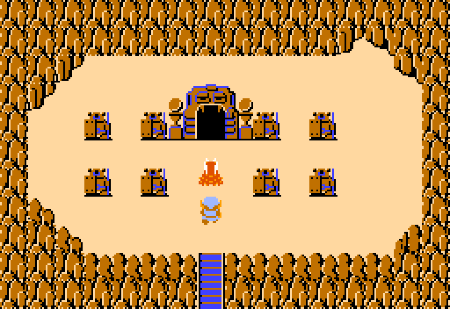
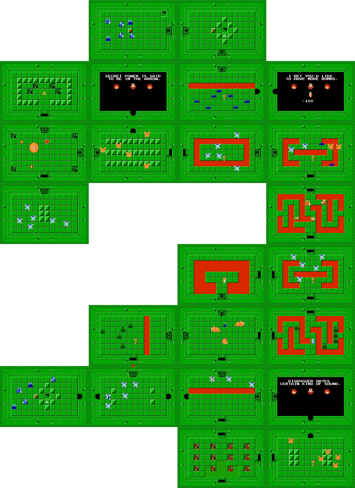
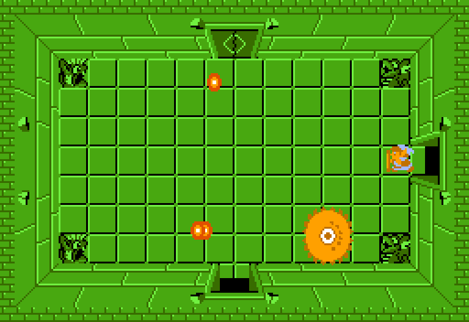

Location and How to Get There
It's found in an area called the Lost Hills.
A room which loops, in every direction except west.
You need to go north 4 times to reach the level's entrance.
{kind=link}

The Layout
The level is shaped like a Lizard.
I could never really see the resemblance to be honest.
This is the first level which has lava instead of water.
You can also find an old man here, who sells a bomb upgrade, that is very useful to buy, allowing you to carry up to 12 bombs, instead of the default 8.
{kind=link}

Key Items
{kind=link}
The Boss, Digdogger
An eye monster. Use the whistle to make it shrink.
Once weakened by the whistle you can use your sword to easily defeat it.
{kind=link}

Difficulty
7/10 This is where the difficulty really starts to ramp up.
Some of the toughest enemies in the game appear here first, like the Blue Darknuts, Gibdos and Pols Voices.
But at this point in the game you are well equipped to handle the challenge.
My Rating
8/10. A very solid level.
I like the green color scheme mixed with lava.
It introduces the player to tougher enemies.
I'd consider this dungeon a halfway point of the game, with the enemies being moderately difficult, but the layout not being that complicated yet.